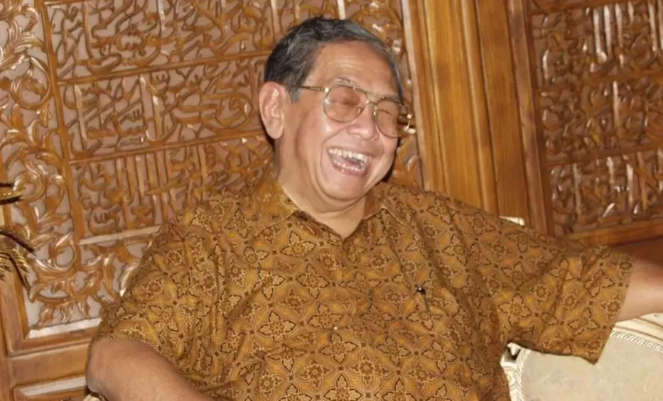
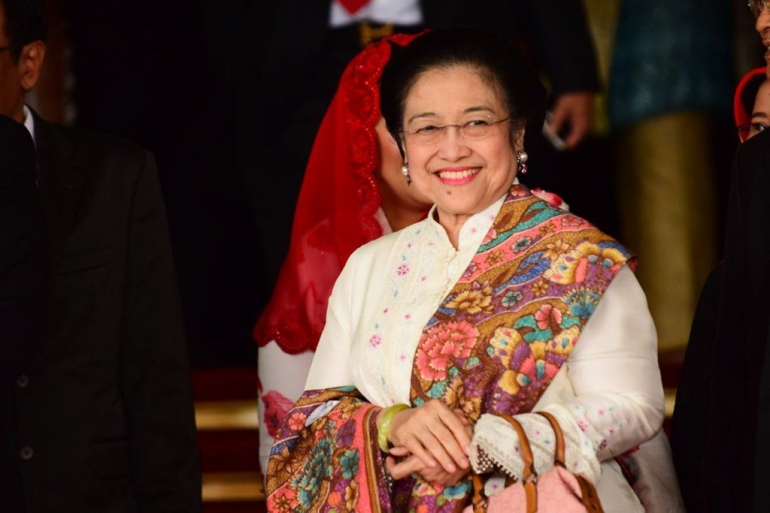
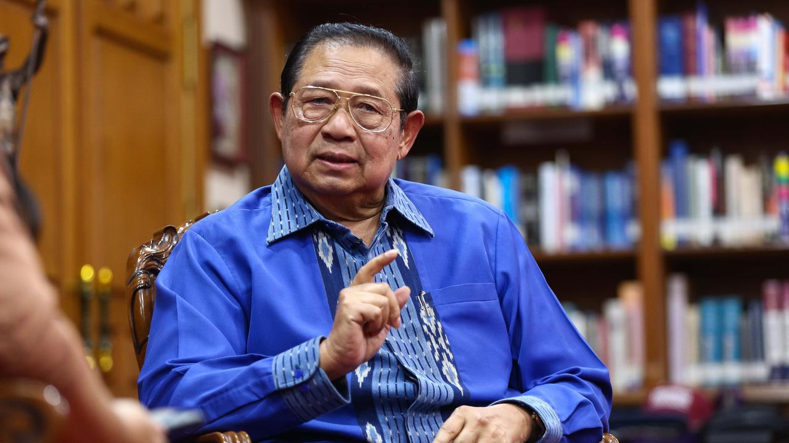
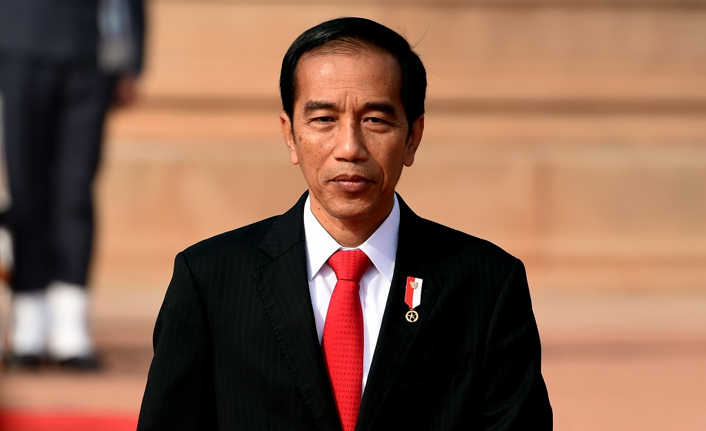
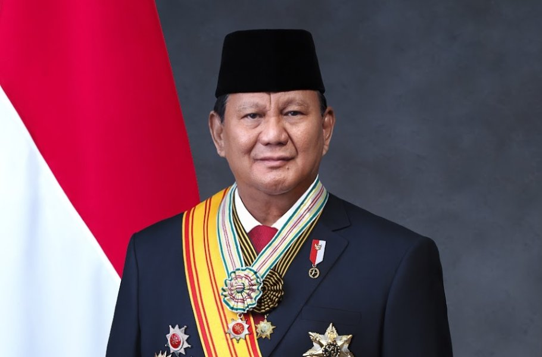

B.J. Habibie menjadi presiden pertama pada era Reformasi setelah mundurnya Presiden Soeharto pada tahun 1998. Pada masa pemerintahannya, Indonesia mulai mengalami perubahan menuju sistem yang lebih demokratis melalui kebebasan pers, pembentukan partai politik baru, dan pelaksanaan Pemilu 1999.

Abdurrahman Wahid atau Gus Dur dikenal sebagai presiden yang mendukung demokrasi, toleransi, dan hak asasi manusia. Pada masa pemerintahannya, masyarakat mulai merasakan kebebasan berpendapat yang lebih luas dan berkurangnya pengaruh militer dalam pemerintahan.

Megawati Soekarnoputri memimpin Indonesia pada masa pemulihan kondisi politik dan ekonomi setelah konflik di awal Reformasi. Pemerintahannya berfokus pada menjaga stabilitas negara dan memperbaiki kondisi ekonomi nasional.

Susilo Bambang Yudhoyono atau SBY merupakan presiden pertama yang dipilih langsung oleh rakyat melalui pemilu. Masa pemerintahannya dikenal dengan perkembangan demokrasi yang lebih stabil, pertumbuhan ekonomi yang cukup baik, dan penguatan lembaga pemberantasan korupsi.

Joko Widodo atau Jokowi memimpin Indonesia dengan fokus utama pada pembangunan infrastruktur dan modernisasi layanan publik. Pada masa pemerintahannya, pembangunan jalan tol, transportasi umum, dan digitalisasi berkembang pesat di berbagai wilayah Indonesia.

Prabowo Subianto menjadi presiden Indonesia setelah memenangkan Pemilu 2024. Pemerintahannya berfokus pada keberlanjutan pembangunan nasional, penguatan ketahanan pangan, dan peningkatan kesejahteraan masyarakat Indonesia.
B.J. Habibie menjadi presiden pertama pada era Reformasi setelah menggantikan Presiden Soeharto. Pada masa pemerintahannya, Indonesia mulai mengalami perubahan besar menuju sistem yang lebih demokratis.
Habibie juga berupaya memperbaiki kondisi ekonomi Indonesia yang sebelumnya mengalami krisis berat akibat krisis moneter 1998.
Setelah Pemilu 1999 dilaksanakan, MPR memilih Abdurrahman Wahid atau Gus Dur sebagai presiden baru Indonesia. Pergantian ini menunjukkan bahwa sistem demokrasi mulai berjalan lebih terbuka karena presiden dipilih melalui proses politik yang lebih demokratis dibanding masa sebelumnya.
Gus Dur dikenal sebagai presiden yang mendukung kebebasan, toleransi, dan keberagaman. Pada masa pemerintahannya, demokrasi Indonesia menjadi lebih terbuka.
Namun, pemerintahannya menghadapi konflik politik dengan DPR dan MPR sehingga Gus Dur diberhentikan pada tahun 2001.
Setelah Gus Dur diberhentikan oleh MPR, jabatan presiden kemudian dilanjutkan oleh wakil presiden saat itu, yaitu Megawati Soekarnoputri. Pergantian ini dilakukan untuk menjaga stabilitas politik dan pemerintahan Indonesia di tengah konflik politik yang terjadi.
Megawati memimpin Indonesia pada masa pemulihan kondisi politik dan ekonomi setelah berbagai konflik di awal Reformasi.
Megawati juga memperkuat hubungan Indonesia dengan negara lain untuk meningkatkan kerja sama ekonomi dan investasi.
Pada tahun 2004, Indonesia pertama kali melaksanakan pemilihan presiden secara langsung oleh rakyat. Susilo Bambang Yudhoyono atau SBY memenangkan pemilu tersebut dan menjadi presiden pertama hasil pemilihan langsung di Indonesia.
SBY menjadi presiden pertama yang dipilih langsung oleh rakyat. Masa pemerintahannya dikenal dengan perkembangan demokrasi yang lebih stabil dan modern.
Pada masa SBY, perkembangan teknologi informasi dan penggunaan internet mulai berkembang pesat di masyarakat Indonesia.
Setelah dua periode pemerintahan SBY berakhir, pemilu 2014 dimenangkan oleh Joko Widodo atau Jokowi. Pergantian kepemimpinan ini menunjukkan bahwa demokrasi Indonesia semakin berkembang melalui proses pemilu langsung yang berjalan damai.
Jokowi memimpin Indonesia dengan fokus utama pada pembangunan infrastruktur dan modernisasi layanan publik.
Namun, pemerintahannya juga menghadapi tantangan seperti polarisasi politik dan kritik terhadap demokrasi.
Setelah berakhirnya masa jabatan Jokowi, pemilu 2024 dimenangkan oleh Prabowo Subianto. Pergantian ini menjadi bagian dari keberlanjutan demokrasi Indonesia pada era Reformasi melalui proses pemilu yang berlangsung secara langsung dan nasional.
Prabowo Subianto menjadi presiden Indonesia setelah memenangkan Pemilu 2024. Pemerintahannya berfokus pada keberlanjutan pembangunan nasional dan penguatan stabilitas negara.
Pemerintahan Prabowo menjadi bagian lanjutan dari perjalanan panjang era Reformasi Indonesia yang terus berkembang hingga saat ini.